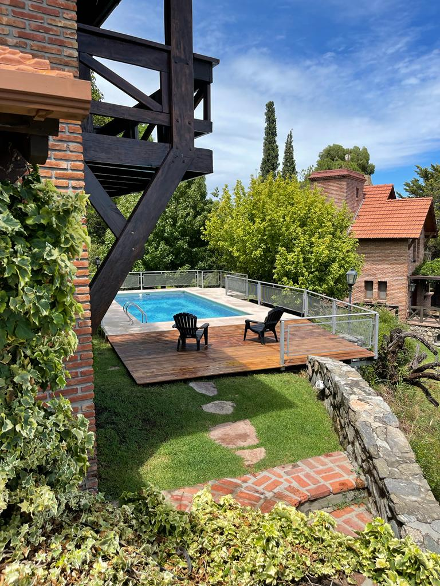
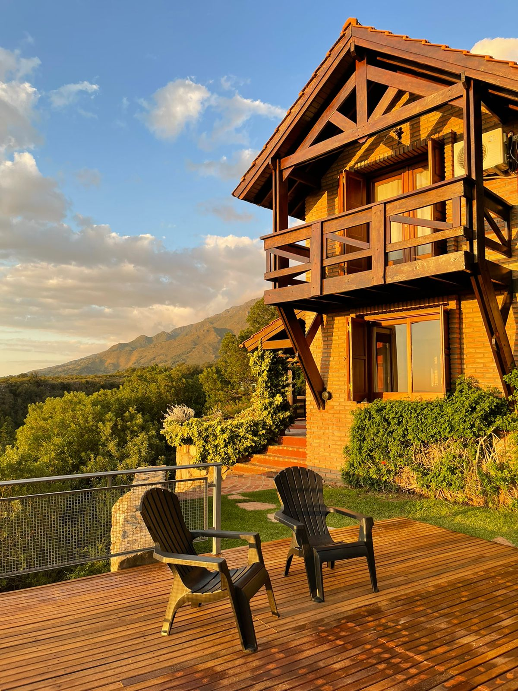
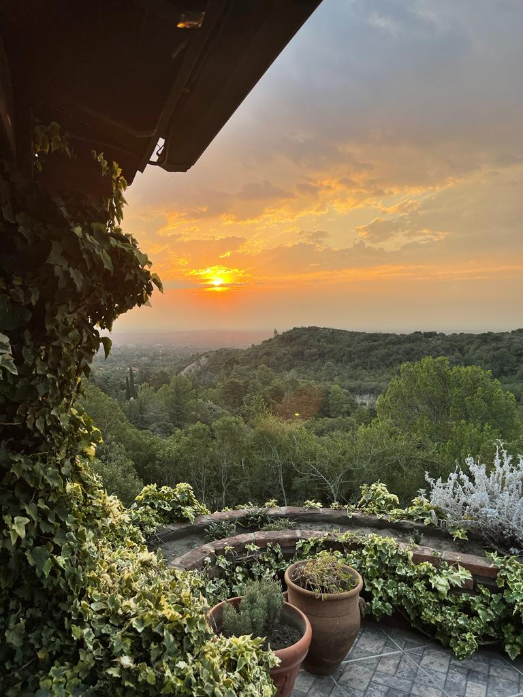

Disfruta de unas maravillosas vacaciones en Villa de Merlo
Nuestro chalet es ideal para una
estadía en familia. Su capacidad es
de 6 personas y tu mascota también
es bienvenida.
Se encuentra ubicado en el Country
Club Chumamaya, sobre el faldeo
de la Sierra de los Comechingones.
Un lugar único, con atardeceres
hermosos y una vista digna de una
postal.
El country cuenta con canchas de
Tenis, Basket, Bochas y Beach
Volley. También pueden aprovechar
los senderos dentro del mismo para
visitar la Reserva Florafaunística de
la sierra. Además hay una bajada al
Arroyo del Tigre.
La cafetería del Country cuenta con
un pequeño almacén, restaurant y
asador



Conoce un poco más el Chalet
Sakura tiene 130 m2 construidos
sobre un parque de 1000 m2. Es ideal
para una estadía en familia. Su capacidad
es de 6 personas y tu mascota también
es bienvenida.
Tiene una cochera cubierta y parrilla.
Cuenta con 3 habitaciones, la que se
ubica en la planta baja es en suite y posee
un sommier King Size (2m x 2m). Las
otras dos se encuentran en la planta alta,
junto a un baño completo, ambas con
sommiers dobles (1,60m x 1,90m) aunque
una se puede adaptar a dos sommiers de
un cuerpo (80cm x 1,90m).
En la planta baja podrán disfrutar del living
comedor con hogar, vista a la sierra y al
valle de Conlara. También en planta baja
se ubica la cocina y el toilette.
La cocina está equipada con vajilla,
batería de cocina, utensilios, hornito
eléctrico, microondas, pava eléctrica,
cocina y horno a gas. Así como también
de una heladera con freezer, entre otros
elementos útiles durante tu estadía.
Cuenta con servicio de DIRECT TV y Wi-Fi.
En el exterior del Chalet, podemos
encontrar dos de los lugares preferidos
por nuestros huéspedes que son, la
terraza y la piscina climatizada con deck
aterrazado.
La climatización de la pileta tiene un valor
adicional por día ya que el personal de
mantenimiento debe ir a realizar las tareas
a diario.
El servicio de piletero y jardinero está
incluido.
Se puede contratar servicio de mucama
para que puedas disfrutar aún más de tus
vacaciones.